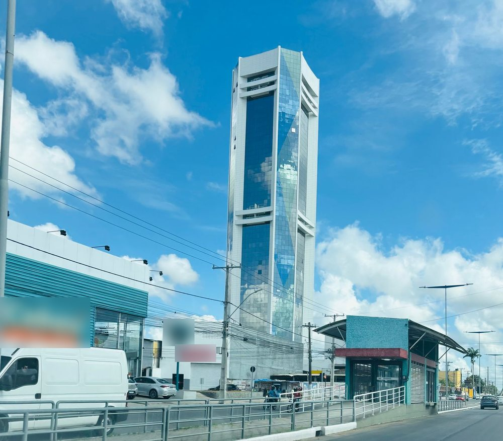
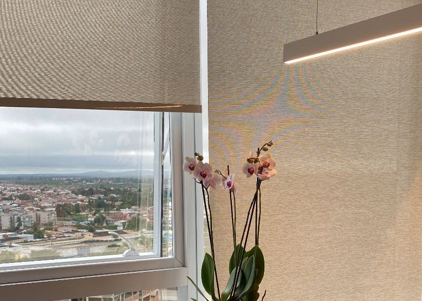

Início · Onde atendo
Edifício Charmant, sala 1302.
O consultório fica no 13º andar do Edifício Charmant Hotel e Business, na Av. João Durval Carneiro, Caseb, Feira de Santana. A consulta também pode ser por vídeo.
Endereço
Endereço
Consultório da Dra. Vanessa CarvalhoEdifício Charmant Hotel e Business · Av. João Durval Carneiro · sala 1302, 13º andar · Caseb · Feira de Santana – BA · CEP 44051-335
É o endereço do consultório desde maio de 2025, segundo a novidade publicada no perfil dela na Doctoralia.


Horário
Horário
Horário de atendimento
Horário da ficha do consultório no Google. A consulta é com hora marcada: confirme o dia e o horário com a equipe.
Teleconsulta
Consulta por vídeo
Segundo a Doctoralia, a Dra. Vanessa faz consulta presencial e consulta por vídeo. Na teleconsulta, a conversa é a mesma, de onde você estiver.
- Escolha um lugar reservado, onde você possa falar à vontade.
- Teste a câmera, o microfone e a conexão antes do horário.
- Tenha à mão exames, relatórios e a lista dos remédios em uso.
“Atendendo tanto presencialmente quanto de forma remota, adapto-me às suas necessidades […]”
Site da Dra. Vanessa, 2024 · cópia no Internet Archive · ver a fonte
Agendamento
Como agendar
O agendamento é feito pelo WhatsApp de atendimento do consultório, (75) 98262-0308. A consulta é com hora marcada e, segundo a Doctoralia, só particular. Confirme valores e detalhes com a equipe.
Preparo
Antes da consulta
- Anote o que você sente, desde quando, e o que mais preocupa.
- Leve exames, relatórios e receitas anteriores.
- Leve a lista dos remédios que você usa, com as doses.
- Se quiser, venha com alguém de confiança: o relato de um acompanhante ajuda, quando necessário.
Urgência
Em crise?
Procure o pronto-socorro mais próximo, o SAMU (192) ou o CVV (188, ligação gratuita, 24 horas). O consultório atende com hora marcada e não é um serviço de urgência.
Dúvidas frequentes
Perguntas comuns
O prédio tem estacionamento?
Confirme com a equipe as opções de estacionamento ao agendar.
Atende aos sábados?
A ficha do Google informa atendimento de segunda a sexta, das 8h às 18h. Confirme com a equipe.
Aceita plano de saúde?
Segundo a Doctoralia, a Dra. Vanessa atende só pacientes particulares.
O consultório atende urgência?
Não. Em crise ou risco imediato, procure o pronto-socorro, o SAMU (192) ou o CVV (188).
Agende
Uma conversa sem pressa, no seu tempo.
Consulta com hora marcada no Edifício Charmant, sala 1302, em Feira de Santana, ou por vídeo. Fale com o consultório pelo WhatsApp (75) 98262-0308.